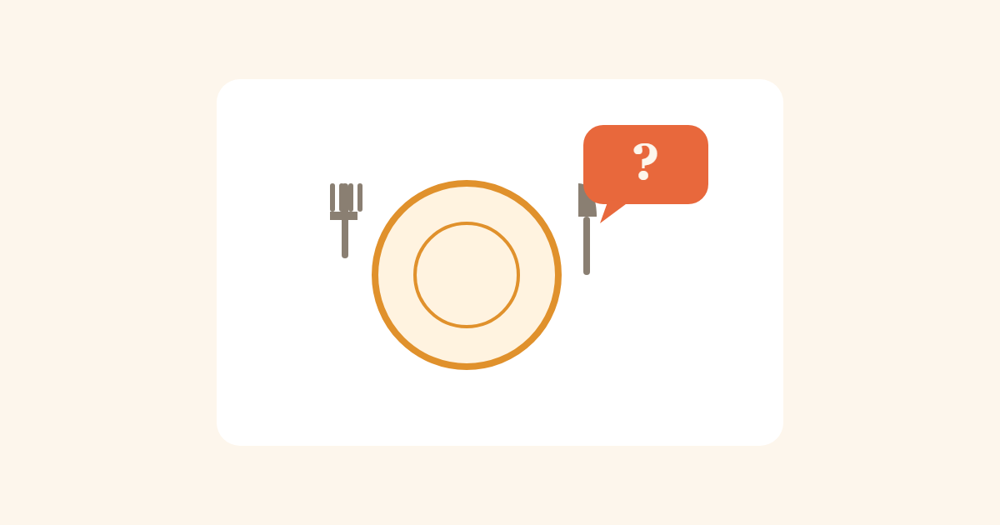

Sigurno jelo vani — kako preživjeti restoran s alergijom
30. august 2026.

Kod kuće znaš tačno šta je u loncu. U restoranu ne vidiš kuhinju, ne znaš ko je danas kuvao, i "malo ulja od oraha za sjaj" niko ne stavlja na jelovnik. Evo kako da smanjiš rizik, a da ipak odeš negdje pojesti.
Prije nego odeš
Ako je moguće, pozovi restoran unaprijed umjesto da improvizuješ na licu mjesta. Pitaj da li imaju listu alergena za jelovnik (sve više mjesta je ima, po zakonu su često obavezni). Biraj termine van gužve — kuhinja koja žuri je kuhinja koja pravi greške. Ako restoran ima online jelovnik, pregledaj ga prije nego stigneš, da za stolom već znaš na šta ćeš pitati.
Kako razgovarati sa osobljem
Budi konkretan i direktan, ne stidljiv. "Ne volim orahe" osoblje shvati kao ukus. "Alergičan sam na orahe, i to je opasno po život, ne samo neprijatno" shvate ozbiljno. Ako je alergija ozbiljna, slobodno zatraži da razgovaraš direktno sa kuhinjom ili šefom kuhinje — konobar često samo prenosi, a informacija se putem izgubi.
Konkretna pitanja koja vrijedi postaviti
- Da li se ovo jelo sprema na istom tiganju/roštilju/friteri kao jela koja sadrže [alergen]?
- Da li sos, marinada ili prelив sadrži [alergen] — ovo je mjesto gdje se alergeni najčešće kriju, niko ne misli na sos
- Mogu li dobiti spisak sastojaka, ili nekoga ko zna tačan sastav?
Znakovi da nešto nije u redu
Ako osoblje ne zna sastav i samo kaže "sigurno je" bez da provjeri, ako izgledaju iznervirano pitanjima, ili ako je mjesto toliko zauzeto da nemaju vremena da ozbiljno odgovore — to je znak da je bolje potražiti nešto jednostavnije, ili otići negdje drugo. Bolje neugodan trenutak nego reakcija za stolom.
Praktični savjeti
- Nosi lijek (adrenalinski autoinjektor, ako je propisan) uvijek, čak i "samo na kafu" — ne planiraš reakciju, ona se desi
- Biraj jednostavnija jela sa manje sastojaka — manje sastojaka znači manje mjesta gdje se alergen može sakriti
- Izbjegavaj bifee/švedske stolove — pribor se miješa između posuda, unakrsna kontaminacija je skoro zagarantovana
- Zapamti (ili zapiši) restorane koji su bili ozbiljni i pažljivi — vrijede da im se vratiš
Kad kupuješ gotove grickalice za poneti kao sigurnu rezervu (za slučaj da ništa na jelovniku ne odgovara), skeniraj ih kroz imamAlergiju prije nego kreneš od kuće — brže je nego čitati deklaraciju stojeći u prodavnici u žurbi.
⚠️ Ovaj tekst je opšta informacija, ne zamjena za tvoju procjenu na licu mjesta. Kod ozbiljne alergije, ti najbolje znaš kada rizik nije vrijedan toga — vjeruj tom osjećaju.